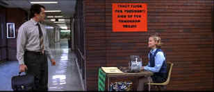
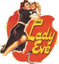
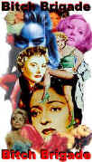
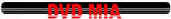

|
Election(SE)/A,B+ |
Paramount/1999/103m/ANA
2.35
|
Alexander Payne has written and directed a
hilarious spoof of high school life centered around a student president election. Payne finds marvelously skewed points
of
view with just enough reality to make Election chime the bells
for pales of laughter.
Some of the most precious moments include one student's reaction to the election results, another’s sly
delight on getting the news that she is being sent to an
alternative educational institute and a teacher’s forlorn
realization that some patterns continue after high school.
Payne shows a lot more directing style helming
Election than he did with his debut film, Citizen Ruth. This
time out the camera aids in emphasizing the humor. The editing
is slick and sharp, just as the humor never loses its bite.
|

|
|
Vote for Flick or else. © |
Reese Witherspoon follows up on her
Pleasantville triumph with another outstanding performance in Election. Reese plays
Tracey Enid Flick, the girl most likely to succeed in
any way, shape or form. She is comfortable letting herself go,
letting the warts hang out, with innocent guile. This is one of
the best comic roles for Matthew Broderick in many moons. His
school teacher Jim McAllister is effective and sympathetic as he's sucked down a whirlpool named
Flick. Broderick uses his
energy to entertaining lengths and director Payne makes the most
of his actors. Along with Witherspoon and Broderick, Chris Klein
makes a vacuously agreeable screen debut and his sister is
played Jessica Campbell with throbbing puberty.
Election is so good it is positively giddy. Everything works.
The characters are believable in the environment created. The hilarity evolves naturally
from the brilliant storytelling. Rolf Kent's score echoes the script's droll style perfectly. Kent's score
comments on and embellishes the action. It sounds like every note was meant to count. The music unselfconsciously makes the movie
funnier. Kent is a true collaborator with Payne.
Election is blessedly free of enhancement, but it is
slightly soft. The glint in Flick's eyes is still evident and every hair on McAllister's
can be counted as he gets more and more frazzled. Colors are bright and accurate. Overall excellent shadow balance. Lots of pop in the picture with an excellent contrast
range. Skin tones are accurate. Blacks are transferred with maximum luster. Dolby
Digital 5:1 surround features good ambient detail. Kent's score floats nicely above the
image.
Audio commentary by director Payne is detailed and polished filled with
production details.
|
|
|
|

Lady Eve,
The (SE) A,C+

Wonderful classic comedy from writer/director Preston Sturges. Henry Fonda and Barbara Stanwyck
star.

Selections from the Feature Archive include articles on
Akira Kurosawa, Blonde Bimbos,
Frank
Darabont, Steven Culp,
John
Herzfeld or Vietnam: The
Hollywood Pariah, and many more....
The Bitch Brigade

A line-up of lean-lipped
actresses who marched through Hollywood in a high heeled goose step armed with razor sharp
dialogue. Click on the image to read all about them.

Click on the DVD MIA symbol for
profiles of DVDs missing in action.
Add films to the DVD MIA Master List by filling out
a simple form. Click Here
|